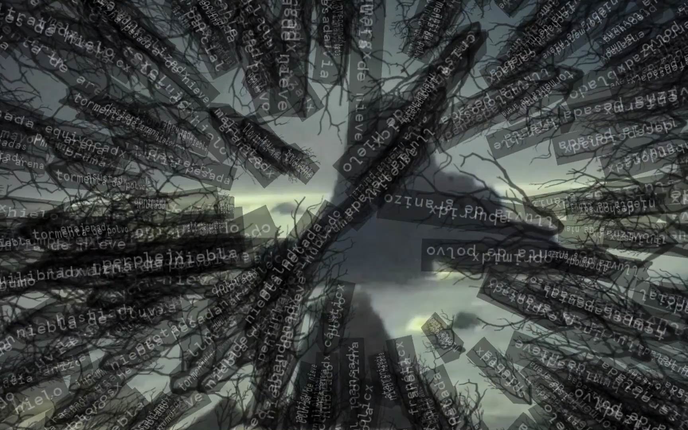
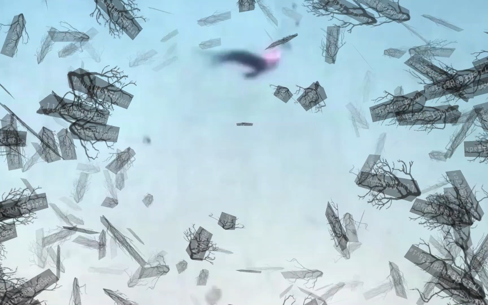
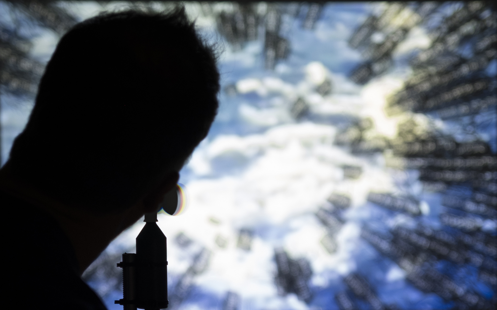
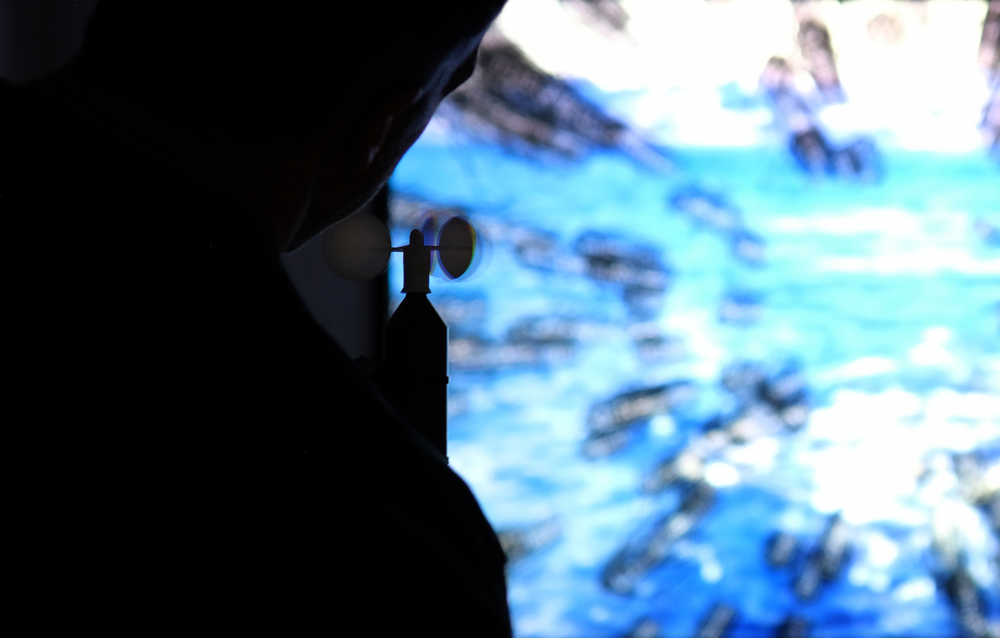
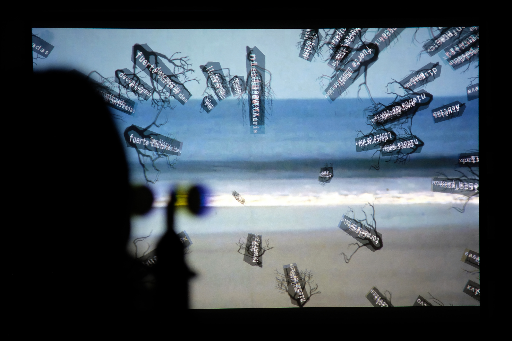
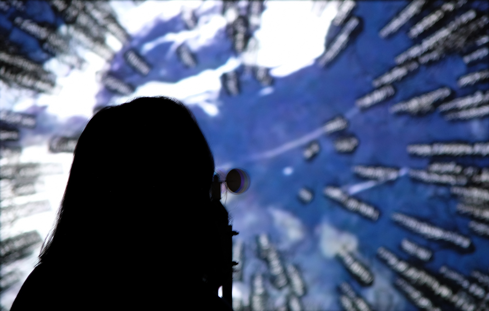
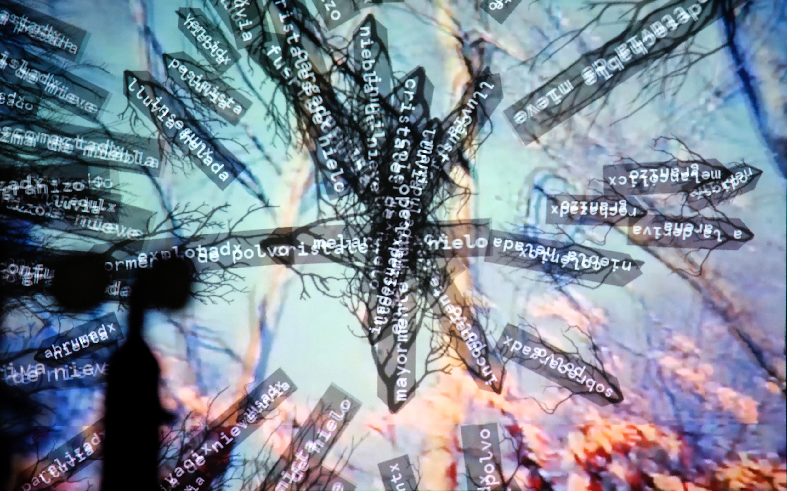

parcialmente nublado - 2019
+ expuesto en mecha, muestra de arte colaborativo. bariloche, brgentina, 2019
- - - - - - - - - - - - - - - - - - - - - - - - - - - - - - - - -
+ shown in mecha, collaborative art show. bariloche, argentina, 2019
pequeña instalación interactiva, desarrollada para mecha, un juego similar al cadáver exquisito, que culmina con una muestra de arte colaborativo.
está basada en un mural de sato cereceda, y compuesta enteramente con material encontrado y de archivo: un anemómetro prestado, videos de 16 mm recuperados o robados, textos tomados de repositorios online libres, sonidos grabados y descargados de internet.
la instalación explora temas de interferencia, ruido y obstáculos en un sentido general, junto al trabajo y esfuerzo requerido para sobrepasarlos.
creada con processing, arduino y openframeworks
- - - - - - - - - - - - - - - - - - - - - - - - - - - - - - - - - - - - - - - - - - - - - - - - - - -
small interactive installation, developed for mecha, a creative game similar to the exquisite corpse, which concludes in a collaborative art show.
the installation is based on a mural by sato cereceda, and composed entirely of found and archived materials: a borrowed wind meter, reclaimed or stolen 16 mm videos, texts taken from free online repositories, recorded and downloaded sounds.
it explores themes related to interference, noise and obstacles in a broad sense, together with the work and effort required to overcome them.
made with processing, arduino and openframeworks.
      